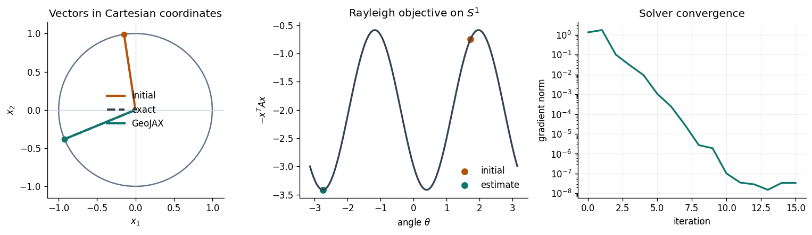
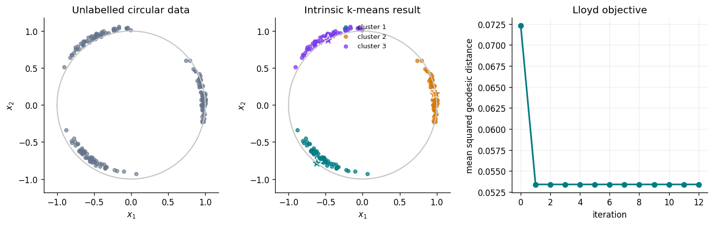
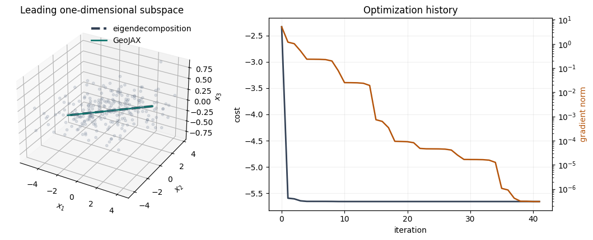
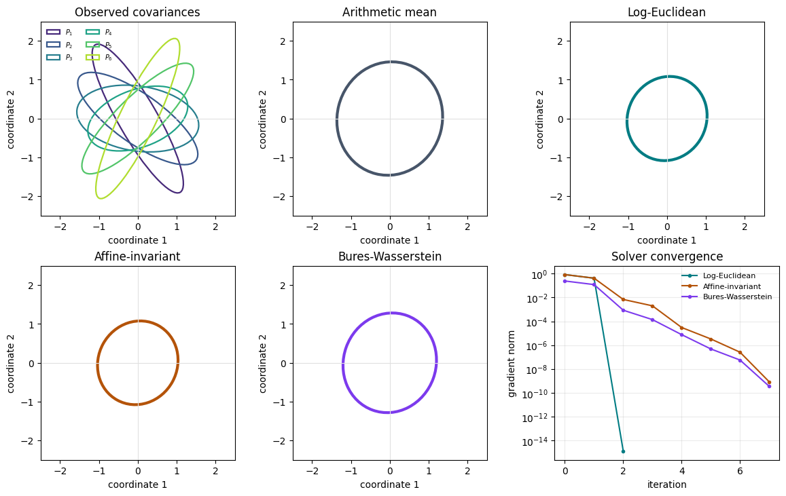
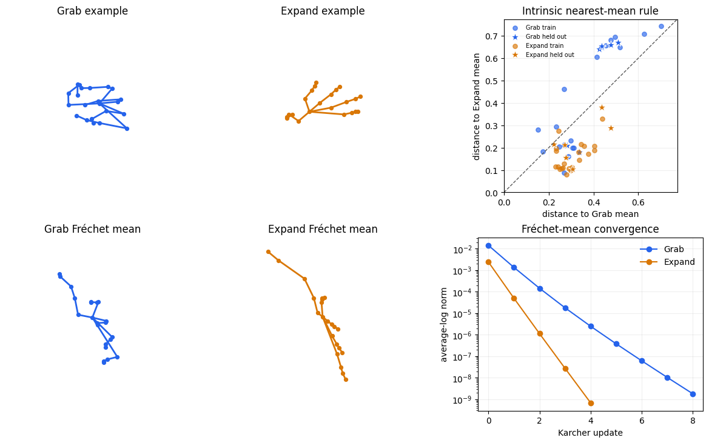
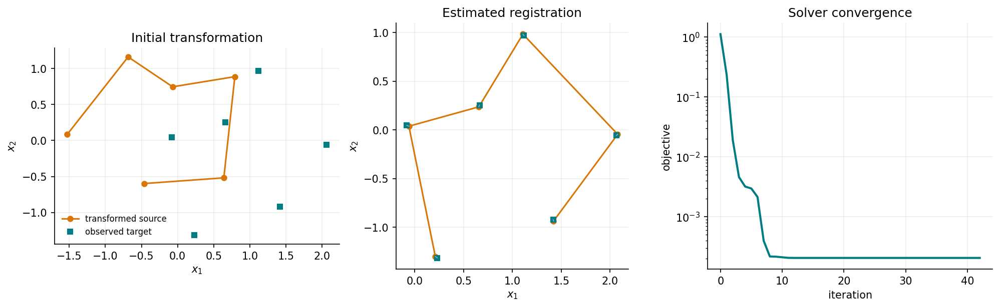
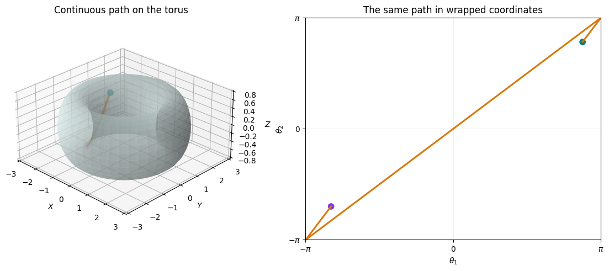

Tutorials#
Each tutorial develops a geometric problem from its mathematical formulation through an executable GeoJAX solution and a visual report of the result.
Practical methods#

Dominant eigenvector on the circle
Find the leading eigenvector of a symmetric matrix by optimizing the Rayleigh quotient on S1.

Intrinsic k-means on the circle
Cluster circular data with geodesic assignments and Fréchet-mean center updates.

Principal component as a subspace
Recover a one-dimensional principal subspace from a synthetic point cloud on Gr(1, 3).

Competing Fréchet means of SPD matrices
Compare log-Euclidean, affine-invariant, and Bures-Wasserstein covariance means.

Hand poses in Kendall shape space
Compute intrinsic means and classify SHREC'17 hand poses using rotation-, scale-, and translation-invariant distances.

Rigid landmark registration
Estimate a planar rotation and translation jointly by optimizing over the special Euclidean group.
Geometry in pictures#

Geodesics on the hyperboloid
Trace unit-speed geodesics and compare the hyperboloid and Poincaré-disk views.

Wrapped geodesics on the torus
See why a smooth shortest path can jump across the edge of an angular chart.